Acknowledgements
Exercise drawings
The drawings in Ferro come from Everkinetic data by Greg Priday, under CC BY-SA 4.0. I recoloured and cropped them for the app. You can download them here under the same licence.
254SVG files · 1.2 MB
Download ferro-drawings.zipБлагодарности
Рисунки упражнений
Рисунки в Ferro взяты из Everkinetic data (автор Greg Priday, лицензия CC BY-SA 4.0). Для приложения они перекрашены и обрезаны. Здесь их можно скачать на тех же условиях.
254файлов SVG · 1.2 MB
Скачать ferro-drawings.zipАлғыс
Жаттығу суреттері
Ferro‑дағы суреттер Everkinetic data жинағынан алынған (авторы Greg Priday, лицензиясы CC BY-SA 4.0). Қолданбаға арнап оларды қайта бояп, шетін қиып тастадым. Осы жерден сол лицензиямен жүктеп ала аласыз.
254SVG файл · 1.2 MB
ferro-drawings.zip‑ті жүктеп алу